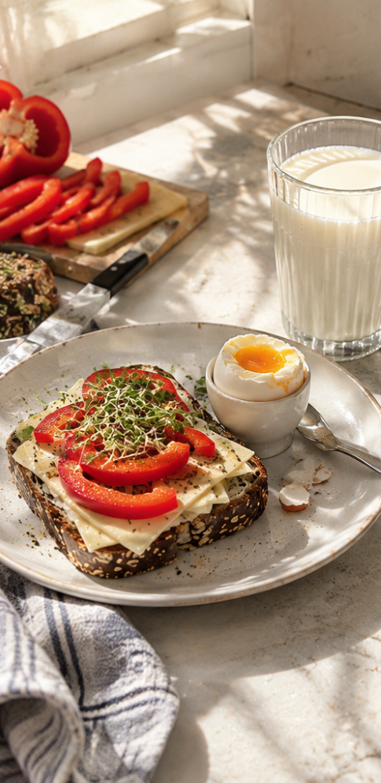
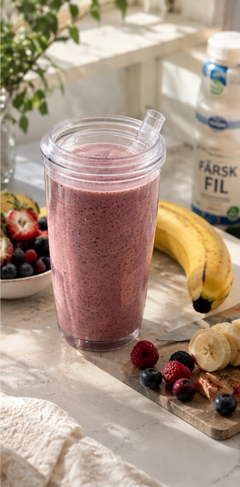
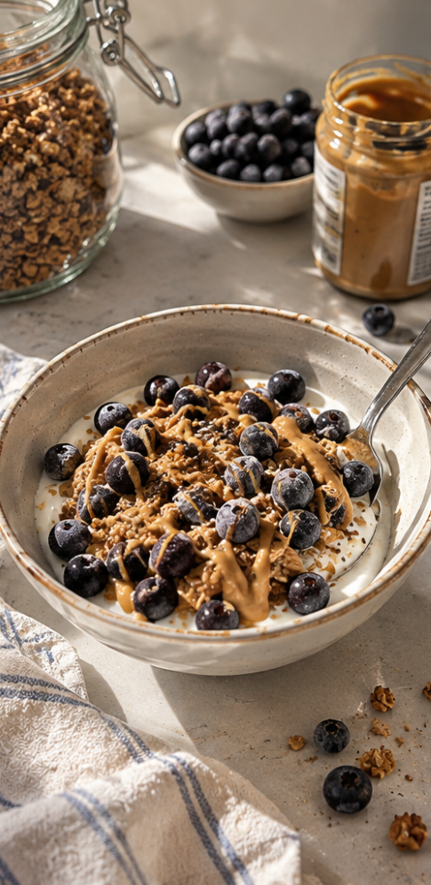

snabba frukostar
-Näring och energi på nolltid!
Du behöver inte kompromissa med hälsan bara för att du har bråttom på morgonen.
Många tror att en näringsrik frukost kräver tid och planering, men med rätt byggstenar kan du slänga ihop ett dunder-mål på bara ett par minuter.
3 knep för en god frukost på mindre än 2 minuter:
1. Satsa på basvaror med lång hållbarhet.
Ha alltid frysta bär, osötad granola och grovt bröd hemma så att du alltid har näringsrika allternativ nära till hands.
Tips:Frys in bröd för långre hållbarhet och tina/rosta i brödrost när du vill. Då hållet brödet betydligt mycket längre.
2. Kombinera direkt i skålen.
Häll upp fil eller yoghurt, toppa med en frukt eller en näve frysta bär och granola -det tar mindre än 60 sekunder och ger en komplett start på dagen.
Tips:Ha på en matsked nötsmör för att få mer nyttiga fetter eller bara för att det är gott! Till exempel jordnötssmör, mandelsmör eller cashewsmör.
3. Frukost i farten.
Har du inte tid att sitta ner? Mixa yoghurt, en näve bär och lite havregryn direkt i en flask-mixer och ta med dig. Voila -du har en egen to-go smoothie utan konstigheter, bara kanon-ingredienser!
3 snabba favoritkombinationer:

Power-mackan
Nyckelhålsmärkt mörkt bröd med ost, skivad paprika, ett ägg och ett glas mjölk vid sidan.

Super-smoothie
En näringsrik smoothie på fil/mjölk, banan och bär. Perfekt som to-go!
Bas-recept
Snabb smoothie (1glas):
Ingredienser:
- 2 dl yoghurt
- 1 banan
- 1 dl bär
Gör såhär:
- Lägg alla ingredienser i en mixer och mixa i ca 30-60 sekunder till önskad konsistens.
- Häll upp i ett glas och njut direkt!

Snabb-skålen
Kvarg, grekiskt yoghurt eller fil med osötad granola, frysta blåbär och jordnötssmör ringlat på toppen.